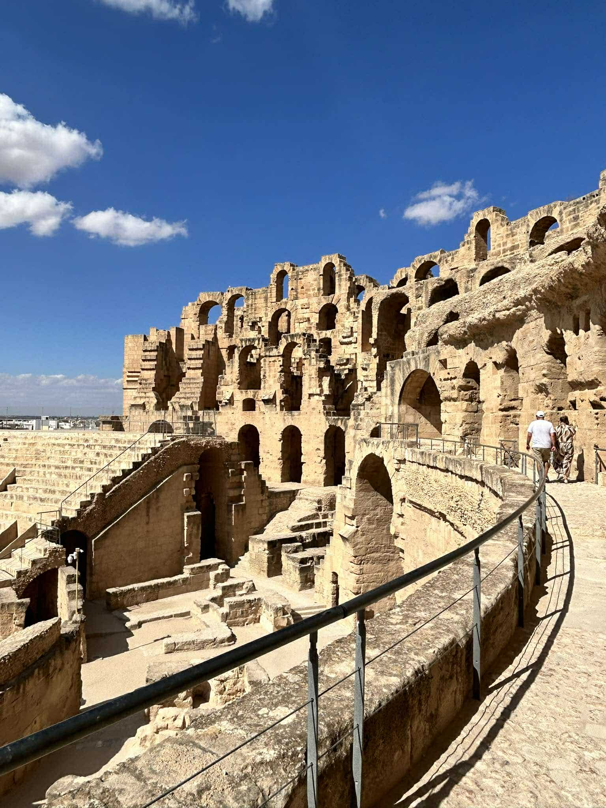
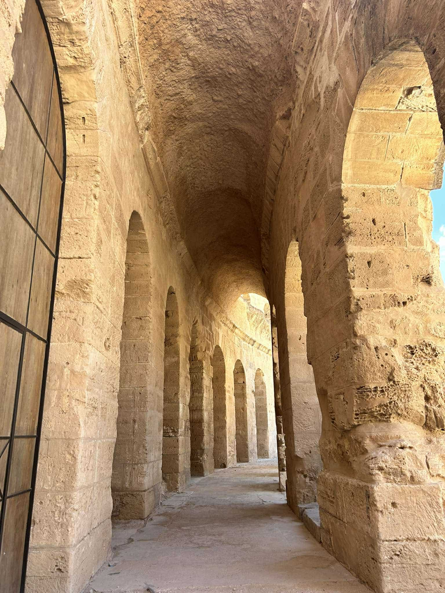
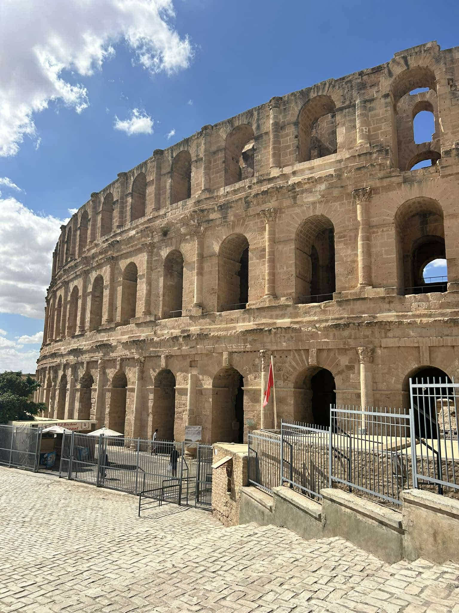
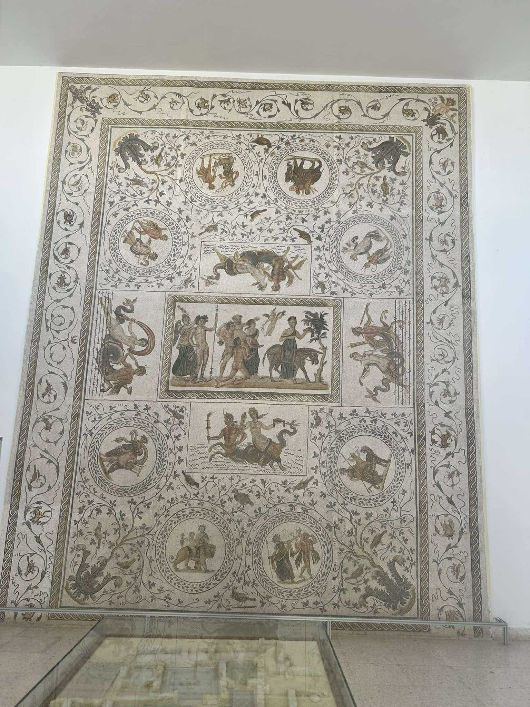
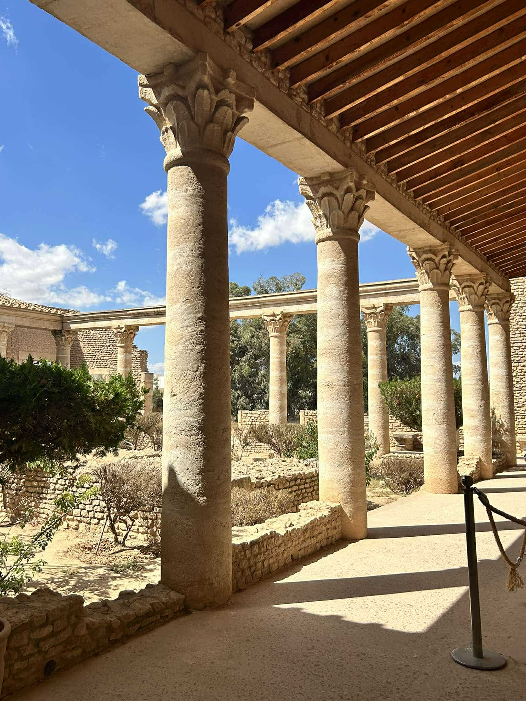
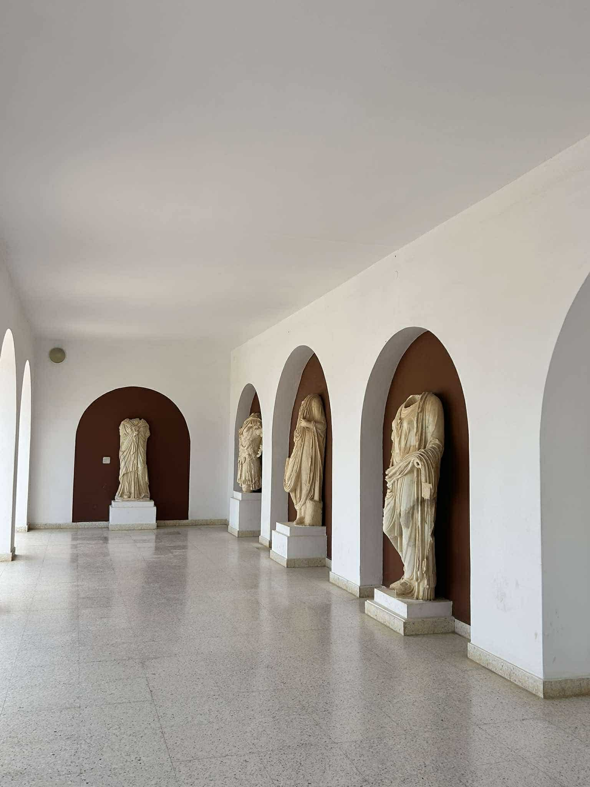
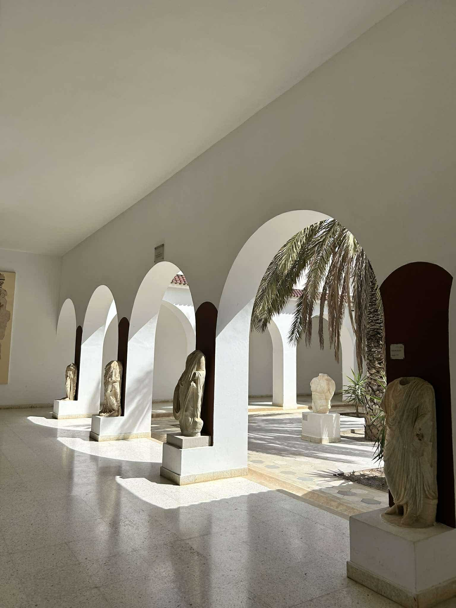

La présence romaine en Tunisie (146 av. J.-C. - 439 apr. J.-C.) a profondément marqué le territoire de l'ancienne Africa Proconsularis. Après la destruction de Carthage, les Romains ont développé une province prospère, caractérisée par une urbanisation intensive et une production agricole importante, notamment d'huile d'olive et de blé.
L'Africa romaine est devenue le "grenier de Rome", avec un réseau de villes importantes comme Carthage (reconstruite), Dougga, El Jem, et Thuburbo Majus. La région a également vu naître des figures majeures comme l'empereur Septime Sévère et Saint Augustin.
Gallerie






